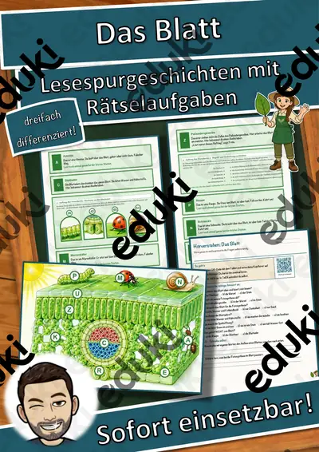
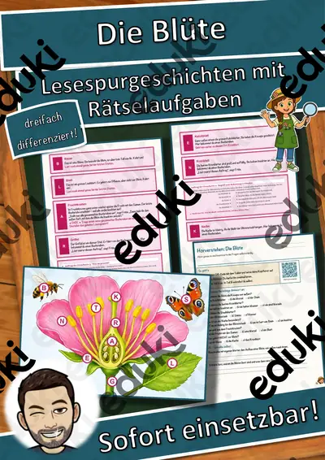
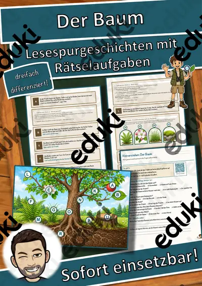
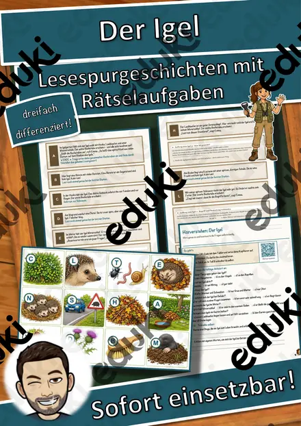
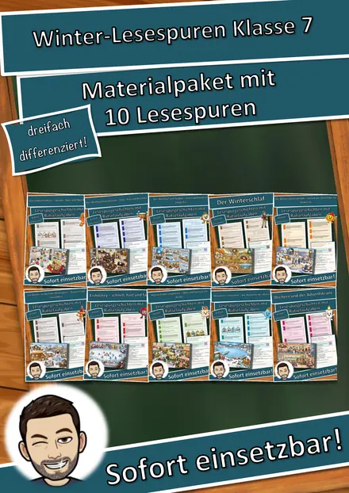

Die Christrose – eine Blume blüht im Schnee – Lesespurgeschichte mit Rätselaufgaben (Klasse 6)
Die Christrose – eine Blume blüht im Schnee – Lesespurgeschichte Biologie (Klasse 6)Schick deine Klasse auf eine Lesespur durch einen Botanischen Garten im Winter! Jakob erzählt, wie er mit Selin und Biologielehrerin Frau Lehmann eine Blume entdeckt, die mitten im Schnee blüht – Maskottchen ist die Gartenschaufel Schaufi. Vom Gartentor über Alpinum, Schneebeet, Lupenstation, Bienenhotel, Pflanzenbeet, Giftecke und Fruchtbeet bis ins Gärtnerhaus führt der Weg. Am Ende jedes Abschnitts verrät ein Hinweis den nächsten Ort auf dem Plan – nur wer genau liest, findet den Weg und sammelt alle geheimen Buchstaben zum Lösungswort.
Die passende Lesespur für Biologie in Klasse 6 (auch 5 und 7) – ideal im Winter zum Thema Bau der Blüte und Überwinterung von Pflanzen, für Stationenlernen oder Vertretungsstunden. Ohne Marken. Geeignet für Mittelschule, Realschule, Gymnasium und Gesamtschule. Das Material ist SOFORT EINSETZBAR und in DREI DIFFERENZIERUNGSSTUFEN (leicht ★ / mittel ★★ / schwer ★★★) angelegt.WICHTIG: Das komplette Material ist sowohl in FARBE als auch in SCHWARZ-WEISS enthalten – ideal zum Sparen von Druckkosten.DAS IST ENTHALTEN
- Lesespurgeschichte in 3 Niveaus (leicht, mittel, schwer)
- farbiger Plan des Botanischen Gartens als Suchkarte
- Hörverstehen mit QR-Code zur MP3 (selbstständiges Hören mit Kopfhörern)
- vier Aufträge auf dem Weg: eine Zuordnung, eine Rechenaufgabe am Pflanzenbeet, ein Quiz und ein Steckbrief
- Rätselseite (Wörter-Suchsel + Rätselfragen rund um die Christrose)
- Ausmalbild zum Thema
- ausführliches Lösungsblatt für die Lehrkraft mit allen Lösungen (Lesespur, Aufträge, Hörverstehen, Rätselseite)
- alles zusätzlich als komplette Schwarz-Weiß-VarianteSO GEHT DIE LESESPURDie Schülerinnen und Schüler lesen ab START, finden im Text den nächsten Ort, suchen ihn auf dem Plan und lesen bei dieser Station weiter. An jeder richtigen Station gibt es einen Buchstaben. Eingeplante Sackgassen (Teich, Rosenbeet, Spielplatz, Palmenhaus) sind keine Stationen und dienen der Selbstkontrolle. Am Ende werden die gesammelten Buchstaben umgestellt und ergeben ein geheimes Lösungswort. (Die Lösungen sind selbstverständlich nur im Lösungsblatt für die Lehrkraft enthalten.)INHALTLICHER SCHWERPUNKTBlütezeit im Winter, Vorkommen in den Kalkalpen und Naturschutz, Hahnenfußgewächs, Kelchblätter, Nektarblätter, Staubblätter und Fruchtblätter, Bestäubung durch Bienen an milden Tagen, Balgfrüchte, Frostschutz durch Zucker, Giftigkeit und der Name schwarze Nieswurz.ABGEDECKTER LEHRPLAN (Klasse 6)
- Biologie – Bau und Funktion von Blütenpflanzen: Blütenorgane, Bestäubung und Frucht; Überwinterung; Pflanzen beobachten und bestimmen (LehrplanPLUS Bayern Biologie/NT 6).
- Mathematik – Multiplizieren und Subtrahieren im Sachzusammenhang.
- Deutsch – Sachtexte sinnentnehmend lesen; einem Hörtext gezielt Informationen entnehmen (Hörverstehen mit MP3).Geeignet für Freiarbeit, Stationenlernen, Vertretungsstunden, Wochenplan und als Einstieg ins Thema.
Ähnliche Materialien

Das Blatt – Lesespurgeschichte mit Rätselaufgaben (Klasse 6)

Die Blüte – Lesespurgeschichte mit Rätselaufgaben (Klasse 6)

Der Baum – Lesespurgeschichte mit Rätselaufgaben (Klasse 6)

Der Igel – Lesespurgeschichte mit Rätselaufgaben (Klasse 6)

Materialpaket Advent für die 5. Klasse: 3 Lesespurgeschichten mit Rätselaufgaben (Weihnachtsstern, Plätzchen backen, Handnähen)

Materialpaket Winter und Advent für die 7. Klasse: 10 Lesespurgeschichten mit Rätselaufgaben fächerübergreifend (Weihnachtsoratorium, Südpol, Eishockey & mehr)

Der Hund – unser treues Haustier – Lesespurgeschichte mit Rätselaufgaben (Klasse 5)